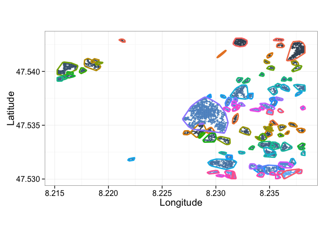
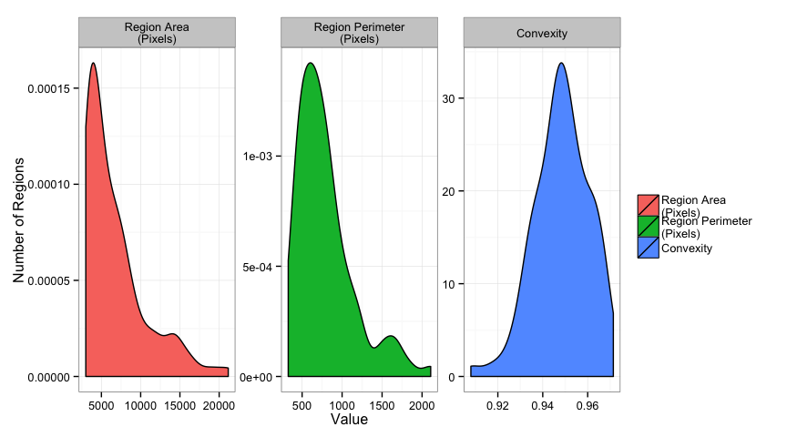
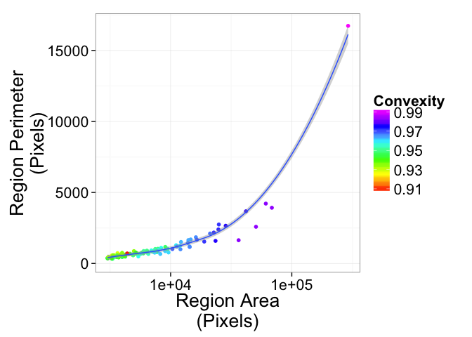

Satellite Image Demo
ESRI Satellite Images
We start off with the satellite images over the Paul Scherrer Institute in Villigen, Switzerland (acquired from ESRI ArcGIS Online)
Load the data in
Once the Spark Cluster has been created and you have the SparkContext called sc (automatically provided in Databricks Cloud or Zeppelin), the data can be loaded using the Spark Image Layer. The command readTiledImage loads in the data as tiles and can read mega-, giga-, even petabytes of data from Amazon’s S3, Hadoop Filesystem (HDFS), or any shared / network filesystem.
Although we execute the command one one machine, the data will be evenly loaded over all of the machines in the cluster (or cloud). The cache suffix keeps the files in memory so they can be read faster as many of our image processing tasks access the images a number of times.
Finding Reflective Objects
As our first task we want to identify all of the reflective objects, for this we - apply a threshold to the average intensity `((red+blue+green)/3)` - identify the distinct regions - analyze the area and perimeter of the regions
Threshold / Segmentation
val pointImage = psiBingImage.sparseThresh(_.intensity>200).cache
Shape Analysis (Area and Perimeter)
val shapeAnalysis = EllipsoidAnalysis.runIntensityShapeAnalysis(uniqueRegions)

Estimating Tree Coverage
To estimate the tree coverage is a slightly more difficult problem, but involves fundamentally the same types of analysis. For this we will use a different threshold criteria for identifying the trees and then apply some morphological operations to group nearby objects together.
Threshold / Segmentation
We identify the tree regions using a fairly simple rule with two criteria
- `Green > (Red+Blue)/2`
- `Green > 50`
We also see that the code which we write, although it is parallel and running over a whole cluster of computers, mirrors the math nicely and contains none of the details of cluster or data management.
val treeImage = psiBingImage.sparseThresh{
pixVal =>
// the green is brighter than the average of the red and the blue
(pixVal.green>(pixVal.red+pixVal.blue)/2) &
// the green value itself is dark (trees do not reflect much)
(pixVal.green<50)
}.cache
Connecting nearby groups
We use the information in the neighborhood of each pixel to connect groups of nearby pixels together (two small adjacent clumps become one). This operation is known in image processing as a Morphological Close
val treeGroupImage = Morphology.close(treeImage,3)
Identifying Regions
We apply component labeling and then filter to results to only keep the middle sized objects (too small are just artifacts or noise, too large is the river and other dark, green objects)
val treeRegions = ConnectedComponents.
Labeling2DChunk(treeGroupImage).filter{
tRegion =>
// we now remove the small single dark regions
tRegion.area>1000 &
// since some of the river is classified as 'tree' as well we can remove all very large objects
tRegion.area<500000
}

Shape Analysis (Area, Perimeter, Concavity)
Now we can calculate the shape information for the tree areas to look at some of the statistics
val shapeAnalysis = EllipsoidAnalysis.runIntensityShapeAnalysis(treeRegions)
 
We can then place the statistics back onto the map (for the largest ones)
Density Plots
Additionally metrics can be calculated like tree density and displayed on their own

Or projected back on top of the original data and a standard map